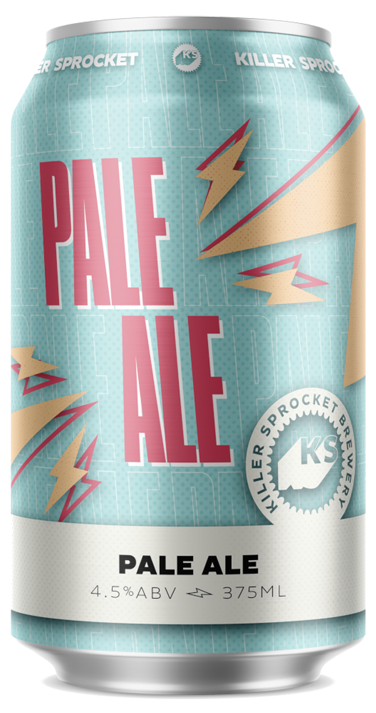
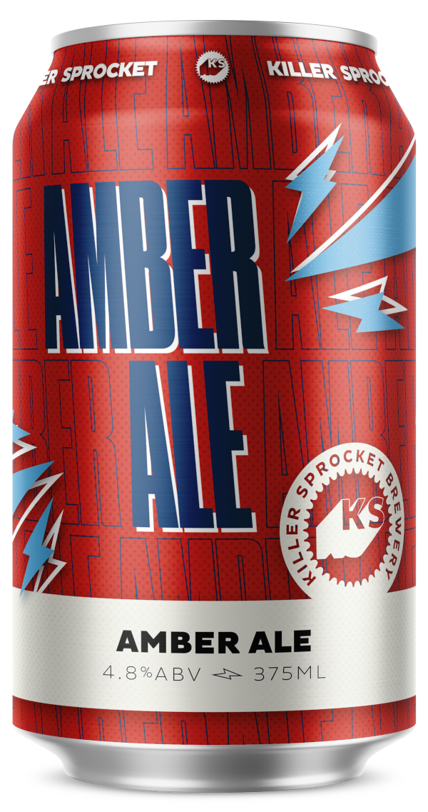

Core Range
Pale Ale
American Pale Ale
Style: American Pale Ale | ABV: 4.5 | IBU: 35
Straw coloured with a white head. Killer Sprocket Pale Ale balances a pleasing malt backbone while staying hop forward and keeping overall bitterness low.
IPA
American IPA

Style: India Pale Ale | ABV: 6.5 | IBU: 50
Killer Sprocket IPA is a balanced American style IPA with a strong malt backbone and medium bitterness utilizing Cascade and Mosaic hops both in the boil and dry hop.
Amber Ale
A darker shade of amber.
Style: American Amber Ale | ABV: 4.8 | IBU: 27
Killer Sprocket Amber Ale utilizes Pale, Munich, Crystal and Chocolate malts to achieve toffee and caramel flavours with a slight level of roasting.
Current Limited Releases
OMG Sour
Orange, Mango, and Guava Sour

Style: Berliner Weisse | ABV: 3.8 | IBU: 6.5
Refreshing, fruity beer with tropical flavours of mango, orange, and guava. Light and effervescent, with a dry, crisp finish.
Stout
American Stout
Style: American Stout | ABV: 5.8 | IBU: 70
Dark and dry, Killer Sprocket Stout pours jet black with a tan head and aromas of toffee and brown sugar.
Risa Sunrise
Tropical Pale Ale
Style: Pale Ale | ABV: 4.3 | IBU: 11
A vibrant golden ale with tropical aromas of pineapple and mango. Perfect for summer.